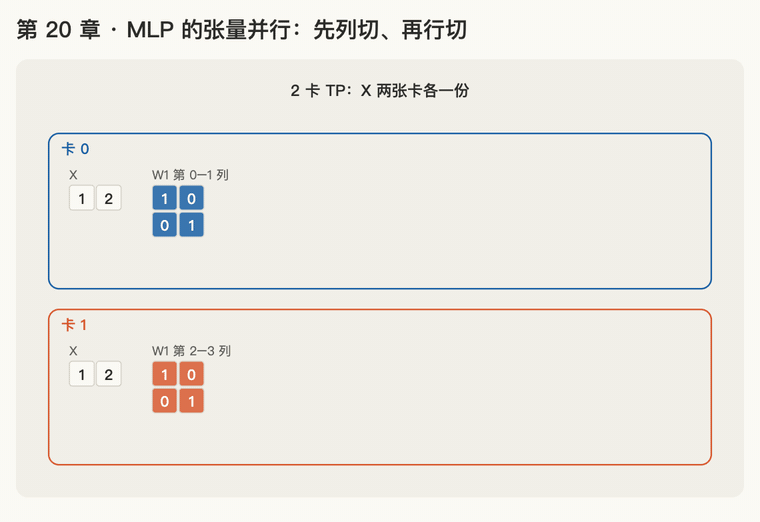

第 20 章 · DeviceMesh、DTensor 与张量并行
本章回答：一个张量"分布在多张卡上"怎么描述？DTensor 的 Shard / Replicate / Partial 是什么意思？张量并行（TP）怎么把一个 MLP 切到两张卡上，为什么"先按列切、再按行切"只要通信一次？
讲解日期：2026-11-14 · 上一章：第 19 章 FSDP2 · 下一章：第 21 章 PP / CP / EP 与组合
对应原文：Ultra-Scale Playbook §Tensor Parallelism（ultrascale-playbook.md第 1032 行起：TP in a Transformer Block 第 1107 行、Sequence Parallelism 第 1214 行）；Megatron-LM 论文（〔在线〕arXiv:1909.08053）§3；官方文档 DTensor、torch.distributed.tensor.parallel（〔在线〕）；多机报告 §2.2；本章输出在本机 Gloo 2 进程上跑过本章缩写：TP = Tensor Parallelism（张量 / 并行）；SP = Sequence Parallelism（序列 / 并行）；DTensor = Distributed Tensor（分布式 / 张量）；mesh（网格）= 把卡排成多维阵列；全部缩写见 附录 · 缩写与术语表
讲解
第一步：DeviceMesh——把卡排成表格（2026-11-14）
多种并行一起用时，要说清"哪几张卡一组做什么"。DeviceMesh（设备网格） 把卡排成多维表格，每一维对应一种并行：
mesh = init_device_mesh("cuda", (2, 4), mesh_dim_names=("dp", "tp"))
# tp=0 tp=1 tp=2 tp=3
# dp=0: 卡0 卡1 卡2 卡3 ← 同一行 4 张卡做 TP（一台机器内，走 NVLink）
# dp=1: 卡4 卡5 卡6 卡7 ← 同一列 2 张卡做 DP（跨机器）
tp_mesh, dp_mesh = mesh["tp"], mesh["dp"]
每一维自动对应一个通信组：卡 0 在 TP 维和 1、2、3 通信，在 DP 维和 4 通信。第 19 章的 HSDP 就是一个 (机器数, 每机卡数) 的 2D mesh。
一句话：DeviceMesh 把卡排成表格，每一维一种并行、一个通信组。
第二步：DTensor 的三种摆放方式（2026-11-14）
DTensor = 一个"逻辑上完整"的张量 + 在 mesh 每一维上怎么摆放（placement）：
| placement | 意思 | 每卡存什么 |
|---|---|---|
Shard(d) |
沿第 d 维切开 | 一段 |
Replicate() |
每卡一份完整的 | 全部 |
Partial() |
每卡存一份"部分和"，加起来才是真值 | 和全局同形状，但只是一部分贡献 |
实测（2 进程）：
big = torch.arange(8.).reshape(4, 2)
dt = distribute_tensor(big, mesh, [Shard(0)])
# rank 0 本地：[[0, 1], [2, 3]] rank 1 本地：[[4, 5], [6, 7]]
dt.redistribute(mesh, [Replicate()]) # 每卡都拿到 (4, 2) 完整的（背后是 all_gather）
s = (dt * 2).sum()
s.placements # (Partial(sum),) ← 每卡只加了自己那段
s.full_tensor() # 56.0 ← 要真值时才 all_reduce
DTensor 的好处：你按单卡的写法写运算，它自己推出结果的摆放方式，必要时自动插通信。从 Shard 换到 Replicate 是 all_gather，Partial 换到 Replicate 是 all_reduce，Partial 换到 Shard 是 reduce_scatter（第 17 章的三个动词全对上了）。FSDP2 的参数就是 Shard(0) 的 DTensor（第 19 章）。
一句话：DTensor = 完整张量 + 摆放方式（Shard 切开、Replicate 复制、Partial 部分和）；换摆放方式就是集合通信。
第三步：张量并行——一层矩阵切到几张卡上（2026-11-14）
FSDP 是"平时切、用时拼"，计算时每卡还是算整层。张量并行（TP） 是计算本身就分开：每张卡只算一层的一部分。
MLP 的切法（Megatron 方案，Playbook 第 1107 行起）：\(Y = \text{ReLU}(X W_1) W_2\)。
- \(W_1\) 按列切（Colwise）：卡 0 拿前一半列，卡 1 拿后一半列。每卡算出中间结果 \(H\) 的一半列，不用通信（每列独立）。ReLU 逐元素，也各算各的。
- \(W_2\) 按行切（Rowwise）：卡 0 拿前一半行（正好对上自己那一半 \(H\)），卡 1 拿后一半行。每卡算出一个和最终结果同形状的部分和（Partial）。
- all_reduce 一次，加起来就是 \(Y\)。
数字演示：\(X = [1, 2]\)，\(W_1\)（2 × 4）\(= \begin{bmatrix}1&0&1&0\\0&1&0&1\end{bmatrix}\)，\(W_2\)（4 × 2）\(= \begin{bmatrix}1&0\\0&1\\1&0\\0&1\end{bmatrix}\)。
| 卡 0 | 卡 1 | |
|---|---|---|
| \(W_1\) 的列 | 第 0–1 列 | 第 2–3 列 |
| \(H = \text{ReLU}(XW_1)\) 的一半 | [1, 2] | [1, 2] |
| \(W_2\) 的行 | 第 0–1 行 | 第 2–3 行 |
| 部分和 | [1, 2] | [1, 2] |
| all_reduce 后 | [2, 4] | [2, 4] |
不切直接算：\(XW_1 = [1, 2, 1, 2]\)，乘 \(W_2\) 得 \([1 + 1, 2 + 2] = [2, 4]\) ✓。
PyTorch 写法：
parallelize_module(mlp, tp_mesh, {"w1": ColwiseParallel(), "w2": RowwiseParallel()})
实测（2 进程）：TP 结果 [[2.0, 4.0]] 和不切的一样；w1.weight 每卡本地 (2, 2)、placement 是 Shard(dim=0)，w2.weight 是 Shard(dim=1)。为什么"按列切"的 W1 显示 Shard(0)？因为 nn.Linear 存的是转置的权重 (out, in)（第 7 章），"切输出的列"在存储里就是切第 0 维。
Attention 同理：Q、K、V 投影按列切（按头切，每卡几个头），输出投影按行切，一次 all_reduce。所以每个 Transformer 层前向 2 次 all_reduce、反向 2 次。
一句话：TP 把 W1 按列、W2 按行切，中间不通信，最后一次 all_reduce；attention 按头切；每层前向两次 all_reduce。
第四步：TP 的代价与 SP（2026-11-14）
TP 通信多且在关键路径上：每层都要 all_reduce，而且下一步要等它的结果，很难藏。所以 TP 只在一台机器内用（NVLink 带宽高），一般 TP ≤ 8。
TP 省什么：参数、梯度、优化器状态都按 TP 度切开；而且激活也部分切开了（MLP 中间的 \(H\) 每卡只有一半）。但 LayerNorm、dropout 这些部分每卡还是存完整的激活。
SP（序列并行） 在 TP 的基础上，把 LayerNorm、dropout 部分的激活沿序列维切开：all_reduce 换成 reduce_scatter（进 norm 前，每卡拿一段 token）+ all_gather（进下一个 TP 区域前拼回来）。通信量不变（第 17 章：all_reduce = reduce_scatter + all_gather），激活显存又省了一截。PyTorch 里用 SequenceParallel() 给 norm 层，配合 Colwise / Rowwise 的 input_layouts / output_layouts 参数（Playbook 第 1214 行起）。
一句话：TP 每层通信、难藏，只在机内用；SP 把 norm 部分的激活按序列切，通信量不变、显存更省。
动画演示：MLP 的列切 + 行切

可交互版：animations/20-tensor-parallel.html。按钮切换"不切 / 2 卡 TP"。
怎么看：
- X 广播给两张卡；W1 按列分成两色，每卡算出 H 的一半；
- W2 按行分成两色，正好对上各自那一半 H；每卡得到一个部分和（Partial）；
- all_reduce 一次，两张卡都得到 [2, 4]；对照"不切"模式结果一样。
练习与作答记录
题 1：8 张卡排成 (dp=2, tp=4) 的 mesh。卡 5 在 TP 维和哪几张卡一组？在 DP 维和哪张卡一组？
作答：（待作答）
题 2：一个 DTensor 的 placement 是 Partial()，要变成 Replicate() 需要哪个集合操作？变成 Shard(0) 呢？
作答：（待作答）
题 3：为什么 MLP 要"W1 按列切、W2 按行切"，而不是两个都按列切？两个都按列切的话中间要多做什么通信？
作答：（待作答）
口诀
mesh 把卡排成表，每一维一种并行一个组；
DTensor 三种摆：Shard 切开、Replicate 复制、Partial 部分和，换摆法就是通信；
TP 先列后行，中间不传、最后一次 all_reduce；只在机内用，SP 再把 norm 按序列切。
本章复习卡片
- P68（DeviceMesh：(dp, tp) 表格，每维一个通信组）
- P69（DTensor 三种 placement；Shard→Replicate = all_gather，Partial→Replicate = all_reduce，Partial→Shard = reduce_scatter；实测 sum 得 Partial(sum)、full_tensor 56）
- P70（TP 的 MLP：W1 Colwise、W2 Rowwise、一次 all_reduce；数字例 [1, 2] → [2, 4]；nn.Linear 权重转置所以 Colwise 是 Shard(0)）
- P71（TP 只在机内；每层前向 2 次 all_reduce；SP = reduce_scatter + all_gather 切 norm 激活）
附录 · 延伸阅读
推荐阅读
| 读什么 | 读哪里 | 读它为了什么 |
|---|---|---|
| ★ Ultra-Scale Playbook §Tensor Parallelism | ultrascale-playbook.md 第 1032–1411 行 |
列切 / 行切的图、Transformer 块的 TP、SP |
| ★ Shoeybi et al. 2019「Megatron-LM」 | §3 Model Parallel Transformers 与 Figure 3（〔在线〕arXiv:1909.08053） | 列切 + 行切的出处 |
| 官方教程「Large Scale Transformer model training with Tensor Parallel」 | 全文（〔在线〕） | parallelize_module 的完整 Llama 例子 |
| 官方文档 DTensor | "DTensor Placement Types"、redistribute（〔在线〕） |
第二步 |
| Korthikanti et al. 2022「Reducing Activation Recomputation」 | §4 Sequence Parallelism（〔在线〕arXiv:2205.05198） | SP 的出处 |
数学原理
- 列切：\(XW = X[W^{(0)}, W^{(1)}] = [XW^{(0)}, XW^{(1)}]\)，各卡独立。
- 行切：\(HW = [H^{(0)}, H^{(1)}]\begin{bmatrix}W^{(0)}\\W^{(1)}\end{bmatrix} = H^{(0)}W^{(0)} + H^{(1)}W^{(1)}\)，各卡算一项，求和要 all_reduce。
- 逐元素激活（ReLU、GELU）对列切的结果可以各自做，因为 \(f([a, b]) = [f(a), f(b)]\)。
公式清单
| 写法 | 意思 |
|---|---|
init_device_mesh("cuda", (dp, tp), mesh_dim_names=("dp", "tp")) |
建 mesh |
distribute_tensor(t, mesh, [Shard(0)]) / .redistribute(...) / .full_tensor() |
DTensor |
parallelize_module(m, tp_mesh, {"w1": ColwiseParallel(), "w2": RowwiseParallel()}) |
TP |
SequenceParallel() |
norm 层的 SP |
代码对照：把本章的数字用代码算一遍
用 torch 把讲义里的数字跑一遍。分布式各章用
dist_util.run在本机起 2 个 Gloo 进程（Mac 上自动设好GLOO_SOCKET_IFNAME=lo0，第 16 章的坑），不需要 GPU。代码在仓库本地pytorch-deep-dive/solutions/chapter-code/ch20_dtensor_tp.py，配套测试tests/test_ch16_22.py；同一章的 notebook：notebooks/ch20_dtensor_tp.ipynb（讲解和代码放在一起，一格一格边读边跑）。Mac 上直接能跑，不需要 GPU：
bash cd pytorch-deep-dive/solutions/chapter-code uv run python ch20_dtensor_tp.py # 一步一步打印 uv run pytest tests/test_ch16_22.py
讲义 ↔ 代码：
| 讲义 | 公式 / 说法 | 写法 | 跑出来 |
|---|---|---|---|
| 第二步 Shard(0) | 按行切 | dtensor_demo 的 local |
[[0, 1], [2, 3]] / [[4, 5], [6, 7]] |
| 第二步 Partial | sum 后部分和 | 同上 | Partial(sum)，full_tensor 56 |
| 第三步 TP | W1 列切、W2 行切 | tp_demo |
TP 与不切都是 [[2, 4]]；W1 Shard(0)、W2 Shard(1) |
关键几行：
distribute_tensor(t, mesh, [Shard(0)])
dt.redistribute(mesh, [Replicate()]) # 背后是 all_gather
parallelize_module(m, mesh, {"w1": ColwiseParallel(), "w2": RowwiseParallel()})
代码里才看得到的 2 件事：
- 代码里的权重是讲义矩阵的转置：
nn.Linear存 (out, in)，所以"按列切"显示成 Shard(0)。 full_tensor()也是集合通信：两个 rank 都要调用（第 22 章的坑）。
自己改一改（不影响练习答案）：
- 把
tp_demo的 x 改成 [[3, 1]]，先手算再跑。 dt.redistribute(mesh, [Shard(1)])看每卡拿到什么。